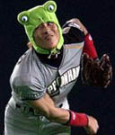
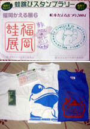
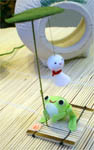

日ハムの新庄がカエルに！ 【福岡発北海道ニッポンハムファン様】なんと、我が日本ハムの新庄選手が、試合開始前に前代未聞の「カエルコスプレ守備練習」をしたそうです。試合前の守備練習で頭を「カエル」にして登場。守備練習とかばしばしこなしていて、すごかったああ。これで打撃練習もしてほしかったなー。 試合は、苦手なダイエー相手に圧勝になったんで、いつもこれで試合もしれほしいなー。
【全国かえる奉賛会】うおおおおおお。新庄いいぞおおお。どーも、最近のパリーグはどうなってんだあああ。セリーグより強いのに、なんで合併なんだあああ。日本ハムは素晴らしいチームなので、この際、新庄選手に習ってユニホーム自体を緑色にしてくれええええ。
民主党・岡田代表の趣味は「カエルの置物集め」！【福岡発ごま蛙同志記者】福岡に転勤してきたので、福岡かえる展にもお邪魔しましたが、 拝謁かなわず残念でした。さて、６月３０日付九州スポーツの１面トップ記事は、「ＢＢＣ報道 人間がカエル出産 イラン女性」です。 イランの日刊紙エテラートによると、水泳中にカエルの卵が女性の体内に入り、体の中で孵化したとのこと。 おそらく、東京スポーツなどでも報道されたことと思いますが、続報を待ちたいと思います。
もうひとつ、最近のニュースから。朝日新聞６月２０日付朝刊３面によれば、民主党・岡田代表の趣味は「カエルの置物集め」だそうです。
【全国かえる奉賛会】ええええーっ！なんでもっと大々的にポスターとかで触れてくれなかっったんだあああ。選挙公報でも政見放送でもいいよねー。カエル集め！そう、ひとこと宣言してくれたら、全国かえる奉賛会は、全力を挙げて選挙運動を支持していたであろおおおお。  カエルイベント三冠達成！【福岡、東京、長野発雛雛同志記者】雛雛です。 福岡での宣言通り（？）、福岡かえる展６、長野県なわてカエル祭り、そして東京のカエルイベントにすべて出席し、３冠達成しちゃいました。スタンプラリーのカードの写真と、各イベントの公式Ｔシャツをそろえた写真が証拠の品です。それでは、これからもよろしくおねがいします。 雛雛同志記者直筆署名 （●）_（●） ┌──────────────────┐ ／ ＼ │=Hina-Hina= │ ｜ v ｜ │mailto: │ ＼＿＿＿＿＿／／│http://www.littlefrog.org/kaerugumi/│ └──────────────────┘
【全国かえる奉賛会】すごいぞおおお。三冠達成は、全国にただひとりだとおもうぞおお。雛雛同志記者ばんざああああい。
カエルに１００円！オフィスグリコで元気１００倍！【あっこ同志記者】サイトをグルグルしていたら夢のようなカエルを発見したのでご報告致します。。グリコのお菓子がぎっしり詰まったクリアボックスの上にカエル貯金箱が設置されていて好きなお菓子を取って代金をカエルの口に入れるというシステムです。自己申告制らしいです。 他にもグリコのアイスが詰まったアイスボックスなんていうのもあって今の時期に最高です。ちょっと小腹が空いた時や残業で遅くなる時はほんとに大助かりですね。
【全国かえる奉賛会】むちゃくちゃに感激したぞおおお。全国の職場に置いてくれえええ。もちろん大王も会社で購入するうう。また九州地区には進出していないが、ぜったいに置いてみせます！  カエルも喜ぶ大雨続き！【福岡発げこげこ大王直筆】今年の梅雨はよく、雨がふるなあ。博多では祇園山笠が開けたら梅雨もあけるといわれているけど、ほんとうにそのようである。豪雨の連続に、明けたら今年の夏はあついよなああ。きっとみんなへばらずにがんばれよおお。携帯で携帯＠カエル新聞を吸い取ろう！ 【全国かえる奉賛会】携帯から初めてカエル新聞を見たいというひとにとっては、アドレスを打つのが難儀なものよのう！そこでドコモとボーダフォンの一部機種から、カメラをかざしてコードを読みとるんぢゃああ。なお、このQRコードを眺めていたらカエルやらオタマジャクシやらが浮かび上がってくるらしいぞおお。ほんとかああ。
【全国かえる奉賛会】携帯から初めてカエル新聞を見たいというひとにとっては、アドレスを打つのが難儀なものよのう！そこでドコモとボーダフォンの一部機種から、カメラをかざしてコードを読みとるんぢゃああ。なお、このQRコードを眺めていたらカエルやらオタマジャクシやらが浮かび上がってくるらしいぞおお。ほんとかああ。
|
メールマガジン登録
メールマガジン解除
Powered by


かえる古新聞過去に取り上げた記事を見出し付きで一覧したい人は、ここをクリック◆創刊号を見る◆先週号を見る◆話題の号を見る◆かえる新聞の昔を読む
|
私も入っています。。全国かえる奉賛会
大王様に会うには、このバナーをクリック。ずっと奥に写真館があるぞ。全国かえる奉賛会に入会するには、自分のホームページのどこかに、下の部分を追加するとバナーがリンク付きで表示されるぞ。どんどん入会しましょー |


|